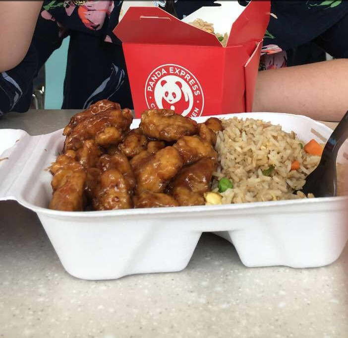

Favorite Foods
Who doesn't have a favorite food or even a favorite type of food?
Food is really good and there are so many different types in the world. I personally love many types of food, but there are some things that I enjoy more than others!
If I had to choose one of my favorite types of dishes, I would choose Chinese food! Orange chicken and pork fried rice are always good options!
There is a photo of me eating Chinese food in existence, so if that doesn't tell you how much I love it, I don't know what will. Some other favorite foods of mine are chicken nuggets, french fries, and chocolate chip cookies!
Home